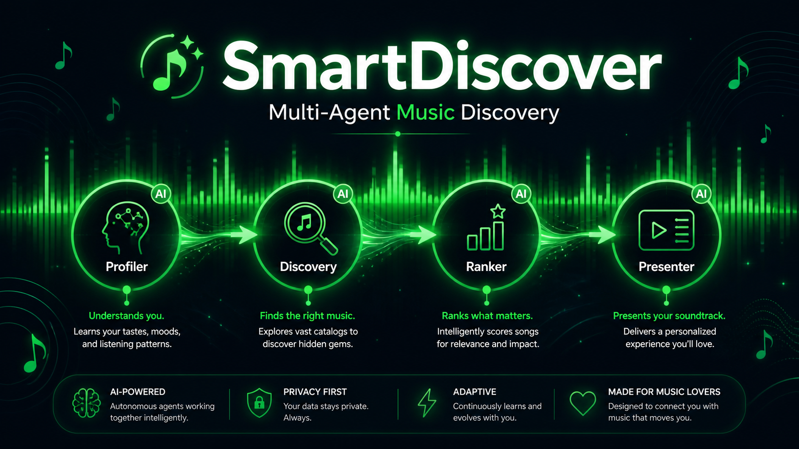

01
Cybersecurity Assessment
Penetration testing, SQL injection analysis, XSS testing, and OSINT-based risk review.
Building practical security solutions
with clear communication.
I am an 8th semester Computer Science student at Universitas Islam Riau. My work bridges cybersecurity, digital forensics, and AI-driven analysis.
01
Penetration testing, SQL injection analysis, XSS testing, and OSINT-based risk review.
02
Evidence collection, artifact inspection, and structured incident analysis workflows.
03
Machine learning prototypes using TensorFlow, Keras, and IndoBERT for security insights.
04
ESP32-based monitoring prototypes and secure telemetry pipeline experimentation.

★ FEATURED PROJECTMulti-agent AI music discovery assistant that turns natural-language mood prompts into ranked Spotify recommendations and one-click playlist creation. Built with a 4-agent pipeline: Profiler → Spotify Search → Filter & Ranker → Presenter.
 02
02
End-to-end security research workflow combining data analysis, threat modeling, and automated reporting.
 03
03
Cultural preservation system with searchable family lineage data and clean information flow.
 04
04
Indonesian text sentiment pipeline for classification experiments and practical analysis.
 05
05
Realtime sensor data prototypes for telemetry and security-oriented embedded workflows.
4+
Active research projects in cybersecurity domains.
60+
Security and analysis lab sessions completed.
10+
Learning milestones across cybersecurity domains.
Open to collaboration on cybersecurity research, digital forensics projects, and AI-enhanced security workflows. Reach out and let's discuss your next project.